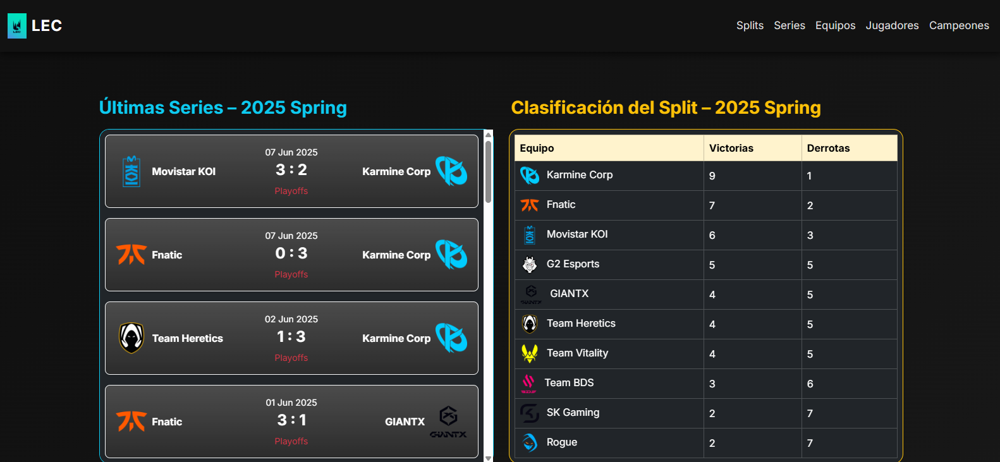
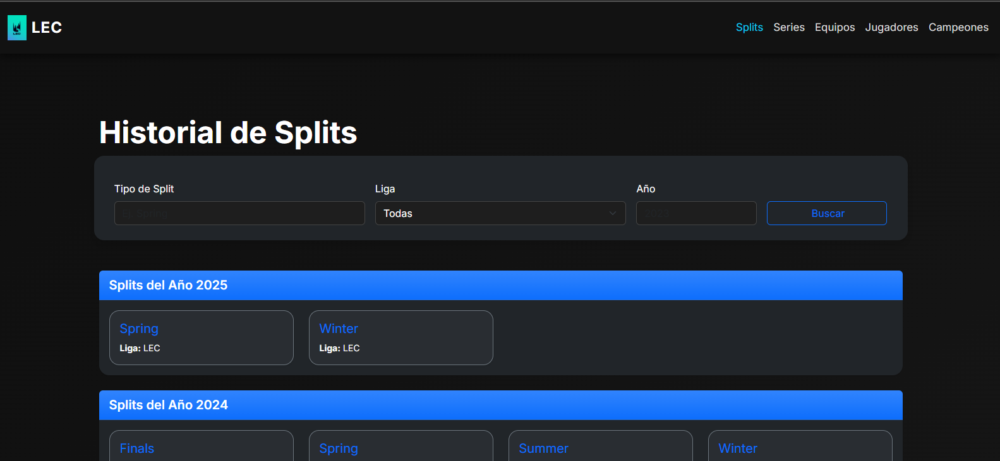
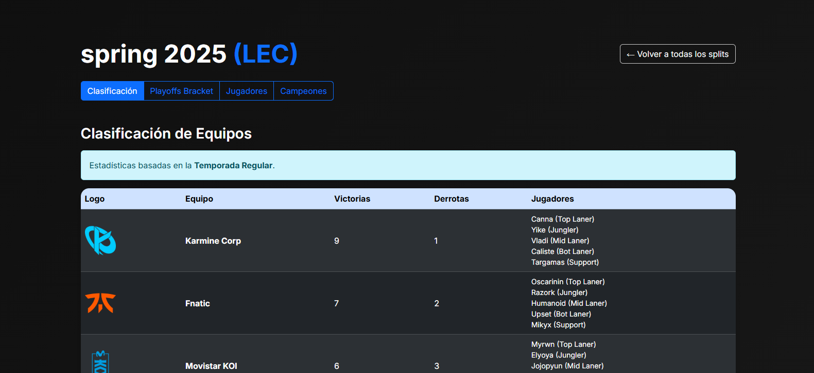
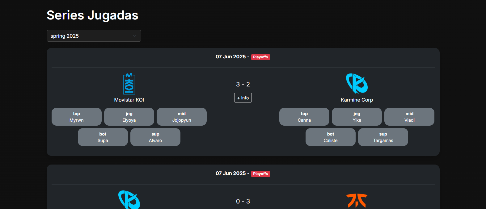
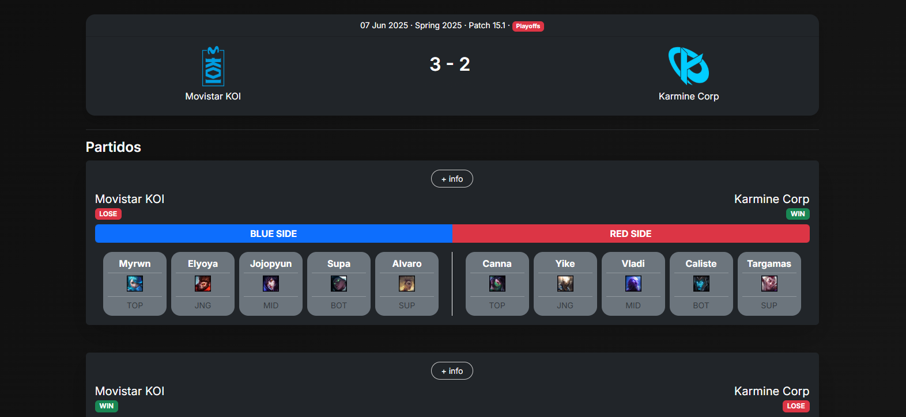
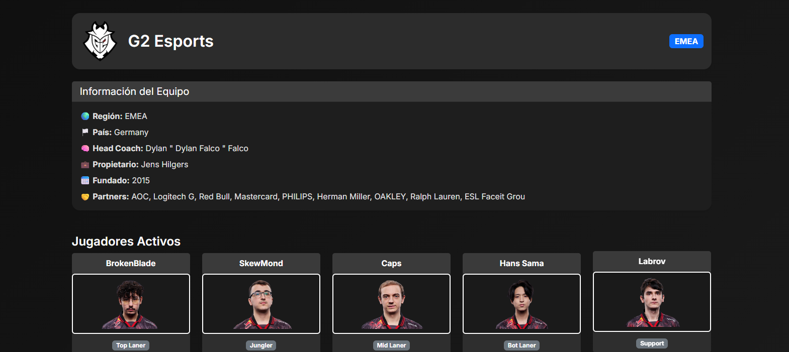
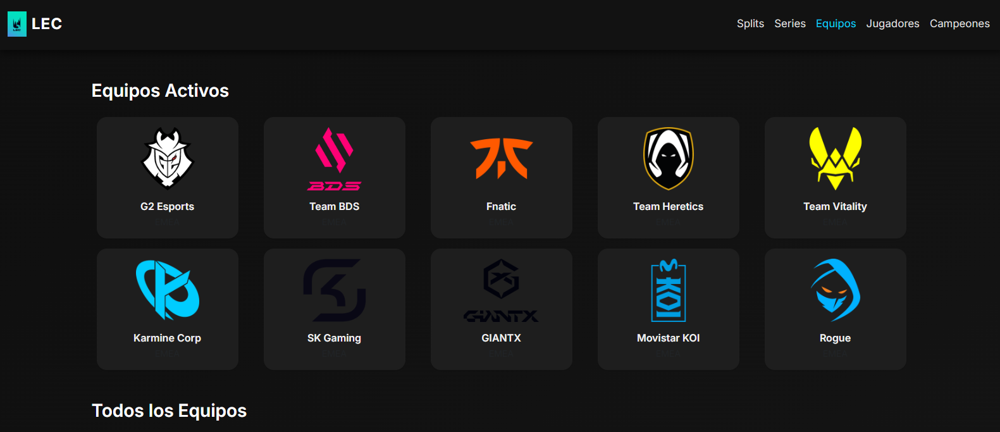
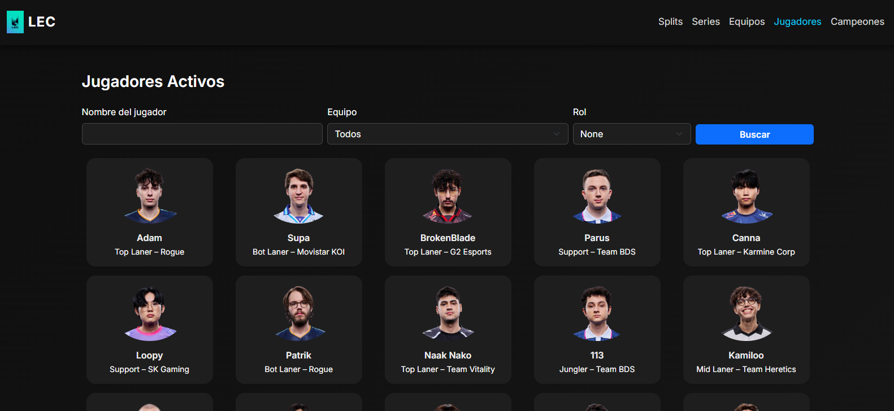
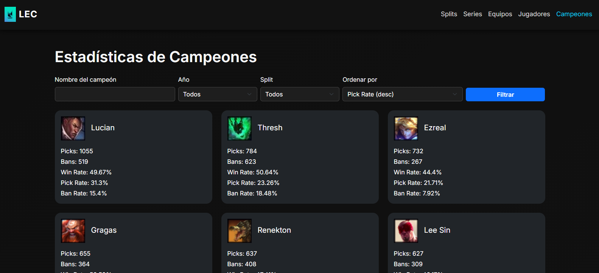

La página index.html presenta un resumen dinámico y visual del estado competitivo actual en la LEC para el último split. Está dividida en dos grandes filas:

Fila 1 – Series recientes y Clasificación
Últimas Series: se listan las series más recientes del split activo, mostrando nombre de los equipos, logos, resultado final, fecha y si fue de temporada regular o playoffs. Se organiza en tarjetas responsivas con color de fondo oscuro.
Clasificación del Split: tabla con los equipos, número de victorias y derrotas en el split actual. Se presenta con colores amarillos e íconos para destacar la sección.
Fila 2 – Jugadores y Campeones
Top 10 Jugadores por KDA: tabla con los 10 jugadores con mejor KDA, mostrando también kills, muertes y asistencias. Se colorea con estilos verdes.
Campeones Más Jugados: tabla con los campeones más utilizados del split, indicando su imagen, número de picks, bans y porcentajes respectivos. Presentado en tonos azul claro.
Funcionalidades adicionales
Diseño responsivo: usa Bootstrap para adaptarse a distintos tamaños de pantalla.
Ajustes automáticos con JavaScript: el script al final ajusta las alturas para que la presentación sea simétrica y consistente.
Este template refleja la importancia de una visualización clara, rápida y estética para el análisis de estadísticas de eSports.
Explicación de la Página de Historial de Splits (splits.html)
La plantilla splits.html permite visualizar y filtrar los diferentes splits históricos de las ligas disponibles, agrupándolos por año. Cada tarjeta enlaza a una vista detallada de ese split.

Filtros disponibles
Tipo de Split: Campo de texto libre para filtrar por nombre del split (ej. Spring, Summer).
Liga: Selector desplegable generado dinámicamente a partir de las ligas disponibles.
Año: Campo numérico para acotar la búsqueda por año (rango permitido: 2000–2100).
Botón Buscar: Envía la consulta GET para actualizar la lista según los filtros.
Visualización por año
Los splits encontrados se agrupan y muestran bajo tarjetas por año, cada una con un encabezado destacado en azul.
Cada split se presenta en una tarjeta gris con el nombre del tipo de split (ej. Spring) y su liga asociada.
Al hacer clic en una tarjeta, se redirige a la vista de detalle del split.
Comportamiento adicional
Si no hay resultados para los filtros aplicados, se muestra una alerta amarilla informando al usuario.
El diseño es completamente responsivo, adaptando las tarjetas a 1, 2, 3 o 4 columnas según el ancho de pantalla.
Esta página proporciona una forma clara y accesible de consultar el historial competitivo por temporada, facilitando el acceso a los datos segmentados por año, tipo y liga.
Explicación de la Página Detalle de Split (detalle_split.html)
La plantilla detalle_split.html presenta una vista completa y segmentada del split seleccionado, con acceso dinámico a varias subsecciones: Clasificación, Bracket de Playoffs, Jugadores y Campeones.

Secciones dinámicas mediante tabs (GET)
La navegación entre vistas se gestiona mediante parámetros GET como ?view=clasificacion, ?view=bracket, etc. Se muestran diferentes bloques según el valor recibido.
1. Clasificación
Muestra una tabla con el desempeño de cada equipo en la fase regular: victorias, derrotas y su plantilla.
Incluye el logo del equipo y una lista de jugadores asociados con sus roles si están disponibles.
2. Bracket de Playoffs
Representación visual del cuadro de playoffs: ronda por ronda, con tarjetas por serie.
Cada tarjeta incluye los dos equipos enfrentados, sus logos, resultado (Bo1/Bo3/Bo5) y fecha.
Si hay un ganador del split, se muestra destacado en la parte superior.
3. Jugadores por Equipo
Sección que organiza a los jugadores por equipo usando tarjetas individuales dentro de una card grande por equipo.
Se muestra la imagen, nombre y rol del jugador. Si no hay rol definido, se asigna uno por posición predefinida.
4. Campeones Utilizados
Tabla que muestra estadísticas de los campeones jugados durante el split: nombre, imagen, pickrate, banrate, winrate, etc.
Incluye un formulario con filtros dinámicos (buscar por nombre, ordenar por métricas).
Diseño completamente responsivo y tabla con scroll vertical para grandes cantidades de datos.
Aspectos técnicos
Diseño adaptativo con Bootstrap, sombreado y tarjetas decorativas para secciones clave.
Uso de filtros personalizados y estructuras condicionales para mostrar contenido dinámico en función del estado de los datos.
Fallback visual en caso de logos o imágenes no disponibles (por ejemplo, `Unknown.png`).
Esta vista es el eje central de análisis de un split individual, permitiendo al usuario consultar de forma clara y estructurada todo el desarrollo del torneo en esa edición.
Explicación de la Página de Series Jugadas (series_list.html)
La plantilla series_list.html muestra todas las series jugadas dentro de un split seleccionado, incluyendo detalles como fecha, tipo de fase, resultado, equipos y jugadores por lado.

Filtro por Split
En la parte superior hay un filtro desplegable para seleccionar un split (por tipo y año).
El formulario se envía automáticamente cuando el usuario cambia el valor del selector.
Visualización de Series
Cada serie se muestra dentro de una tarjeta oscura que incluye:
Fecha del enfrentamiento
Etiqueta indicando si fue Regular Season o Playoffs
Resultado (victorias por equipo)
Botón + info para ver el detalle completo de la serie
Equipos y Jugadores
Cada equipo (azul y rojo) se presenta con:
Logo con enlace a la página del equipo
Nombre del equipo
Listado de los jugadores alineados, con nombre y posición
Cada jugador está enlazado a su perfil individual.
Esta vista permite revisar visualmente el desarrollo competitivo de un split, con acceso directo a la información de cada serie y sus protagonistas.
Explicación de la Página de Detalle de Serie (series_info.html)
La plantilla series_info.html muestra toda la información relevante de una serie específica jugada en un split, incluyendo equipos enfrentados, resultado general y detalle individual de cada partida.

Resumen General
Encabezado con fecha, split, versión de parche (si existe) y tipo de fase (Playoffs o Regular Season).
Visualización central de los dos equipos enfrentados con sus logos, nombres y el resultado final de la serie.
Listado de Partidas
Para cada partida disputada se muestra una tarjeta con:
Ganador de cada lado (con badge verde/rojo)
Botón + info que enlaza al detalle completo del partido
Etiqueta visual de los sides (Blue Side / Red Side)
Visualización de Jugadores
En cada partida, los jugadores se listan por equipo en dos columnas diferenciadas (azul y rojo).
Cada jugador aparece en una tarjeta que incluye:
Su nombre (recortado si es largo)
Campeón jugado con icono
Rol
Diseño adaptativo con scroll horizontal para pantallas pequeñas.
Esta vista permite consultar el desarrollo completo de una serie y el rendimiento individual de cada jugador en cada mapa. Es especialmente útil para análisis posteriores y revisiones técnicas.
Explicación de la Página de Detalle de Equipo (detalle_equipo.html)
La plantilla detalle_equipo.html muestra información detallada sobre un equipo específico de la LEC, incluyendo sus datos organizativos y jugadores activos clasificados por rol.

Encabezado del Equipo
Muestra el logo del equipo (si está disponible), el nombre y la región como badge visual.
Diseño con fondo oscuro y tarjeta destacada en la parte superior.
Sección de Información General
Presenta información clave como país, región, head coach, propietario, año de fundación y sponsors.
Se usa una tarjeta Bootstrap con fondo oscuro y un encabezado diferenciado.
Jugadores Activos
Se muestran tarjetas por jugador, agrupadas por el rol (`Top`, `Jungla`, `Mid`, `ADC`, `Support`).
Incluye nombre, imagen y badge del rol. La imagen se recorta y enmarca con estilos personalizados.
Layout responsivo en una cuadrícula fluida con columnas que se adaptan al tamaño de pantalla.
Detalles técnicos y visuales
Uso de `dictget` para agrupar jugadores por rol dentro del contexto del equipo.
Fallback en imágenes gestionado con condiciones `{% if jugador.imagen %}`.
Diseño oscuro consistente con el resto de la interfaz de LEC Stats.
Esta vista permite al usuario conocer en profundidad a cada equipo y explorar su plantilla de forma clara y atractiva.
Explicación de la Página de Equipos (equipo.html)
La plantilla equipo.html muestra una vista de cuadrícula con todos los equipos registrados en la base de datos, diferenciando entre los equipos activos y el total histórico. Cada tarjeta lleva al detalle del equipo correspondiente.

Sección de Equipos Activos
Se muestra en la parte superior, con diseño de tarjetas .card alineadas en una cuadrícula responsiva.
Cada tarjeta contiene: el logo del equipo (si lo tiene), su nombre y la región a la que pertenece.
El enlace en cada tarjeta lleva a la vista detalle_equipo.
Sección de Todos los Equipos
Ubicada justo debajo de la anterior, contiene tanto activos como equipos pasados (históricos).
Si el equipo no tiene logo, se muestra una imagen por defecto (`Unknown.png`).
Diseño y comportamiento responsivo
Se adapta automáticamente mediante media queries a columnas de 5, 3, 2 o 1 tarjeta por fila, según el ancho de pantalla.
Utiliza `flexbox` (`.equipos-grid`) para una distribución fluida y centrada.
Estilo visual unificado con tonos oscuros, bordes redondeados, y sombras suaves.
Esta plantilla proporciona una navegación rápida e intuitiva para explorar equipos actuales y pasados que han formado parte de la LEC.
Explicación de la Página Detalle del Partido (partido.html)
La plantilla partido.html ofrece una vista completa de todo lo sucedido en un partido de la LEC, incluyendo picks, bans, objetivos neutrales, estadísticas individuales de jugadores y visualizaciones gráficas.
Resumen y Resultado
Sección inicial que muestra a ambos equipos, sus logos, nombre, side (blue/red), duración del partido y el resultado (victoria/derrota).
Sección de Picks y Bans
Cada equipo tiene sus bans y picks en tarjetas pequeñas con número de selección/baneo, imagen del campeón y nombre.
Los datos se organizan en columnas separadas para el equipo azul y rojo.
Objetivos Neutrales
Representación visual por equipo de dragones (con tipos individuales), barones, heraldos, torres, inhibidores, y placas.
Se muestran usando emojis y badges visuales para mejorar la comprensión rápida.
Estadísticas de Jugadores
Presentadas en forma de tarjetas por jugador, incluyendo:
Nombre, posición y campeón jugado
KDA, oro, daño, visión y CS
Se organiza en secciones diferenciadas para Blue Side y Red Side.
Visualización Gráfica
Se puede alternar entre vista de tarjetas y gráficos con botones interactivos.
Los gráficos (oro, CS y visión) se generan con Chart.js, usando un canvas dinámico.
Esta plantilla es clave para analizar a fondo el desarrollo de un partido individual, tanto a nivel de estrategia (picks/bans) como de ejecución (estadísticas por jugador).
Explicación de la Página de Jugadores (jugadores.html)
La plantilla jugadores.html permite visualizar, buscar y filtrar a todos los jugadores activos durante el split actual. Presenta sus imágenes, nombres, roles y equipos asociados en un diseño de cuadrícula responsiva.

Buscador de Jugadores
Incluye filtros por:
Nombre del jugador (campo de texto)
Equipo (selector desplegable)
Rol (selector desplegable)
El formulario se envía por método GET para mantener los filtros visibles en la URL y en la interfaz.
Tarjetas de Jugador
Cada jugador se presenta en una tarjeta que incluye:
Imagen (con fallback si no tiene)
Nombre
Rol y equipo
Las tarjetas enlazan a la vista detalle_jugador.
Diseño en cuadrícula responsiva con 5, 3, 2 o 1 columna según el tamaño de pantalla.
Esta vista facilita la exploración del roster activo de la LEC y permite filtrar por criterios clave para análisis o navegación específica.
Explicación de la Página de Detalle de Jugador (detalle_jugador.html)
La plantilla detalle_jugador.html ofrece una vista individualizada de cada jugador activo, incluyendo su información biográfica, estadísticas acumuladas por split y un listado de sus partidas más recientes con filtros aplicables.
Cabecera del Jugador
Incluye imagen, nombre, equipo y logo del equipo (si está disponible).
Se muestra dentro de una tarjeta con diseño centrado, fondo oscuro y bordes redondeados.
Información Personal y Contrato
Sección lateral que presenta nombre real, rol, país, residencia, fechas de contrato y si está activo.
Diseño dividido en dos columnas responsivas para adaptarse a diferentes tamaños de pantalla.
Estadísticas Generales del Split
Promedios de KDA, CS, visión y winrate presentados como tarjetas de resumen.
Tabla de Rendimiento por Partida
Se incluye un buscador con filtros por campeón, resultado y ordenamiento por métricas (kills, gold, visión, etc.).
La tabla muestra rival, campeón usado, resultado, K/D/A, CS, oro, daño y visión para cada partida.
Diseño responsivo y scroll vertical garantizado con `table-responsive`.
Esta vista permite realizar un seguimiento detallado del rendimiento de un jugador a lo largo del split, facilitando tanto el análisis estadístico como el acceso a su historial competitivo.
Explicación de la Página de Estadísticas de Campeones (campeones.html)
La plantilla campeones.html muestra una lista de todos los campeones utilizados durante los splits de la LEC, permitiendo buscar, filtrar y ordenar la información por distintas métricas clave.

Buscador y Filtros
Se permite filtrar por:
Nombre del campeón (campo de texto)
Año del split
Tipo de split (Spring, Summer, etc.)
Métrica de ordenación (nombre, pickrate, banrate, winrate)
El formulario utiliza GET para mantener filtros y facilitar la navegación.
Tarjetas de Campeones
Cada campeón se presenta en una tarjeta con:
Imagen (o inicial del nombre si no tiene)
Nombre del campeón
Número de picks y bans
Win Rate, Pick Rate y Ban Rate
Diseño en filas responsivas de 1 a 3 columnas.
Tarjetas con estilo oscuro y métricas alineadas para fácil comparación.
Esta vista permite a los usuarios analizar la popularidad y efectividad de los campeones en la escena competitiva profesional, filtrando por contexto histórico o estratégico.